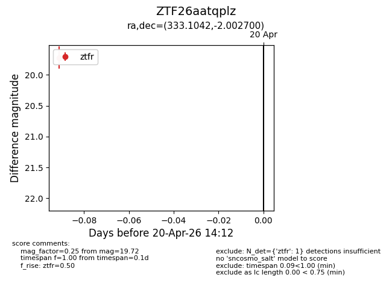
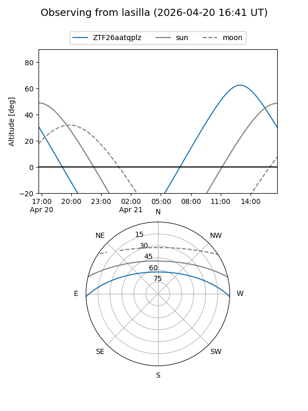
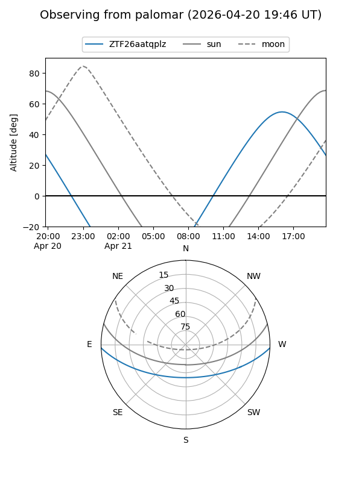

ZTF26aatqplz
Target ZTF26aatqplz at 2026-04-20 14:23
Aliases and brokers:
FINK: link
Lasair: link
ALeRCE: link
alt names
ZTF26aatqplz (ztf,fink_ztf)
Coordinates:
equatorial (ra, dec) = 333.1042,-2.00270
equatorial (HMS+DMS) = 22:12:25.01,-02:00:09.72
galactic (l, b) = (59.4738,-44.40493)
Flags:
Photometry:
last ztfr=19.72
1 ztfr detections
Lightcurve

Visibility


Additional plots